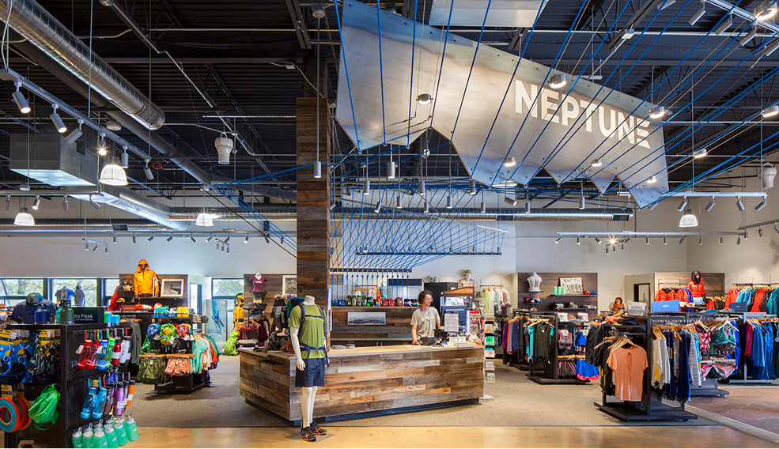
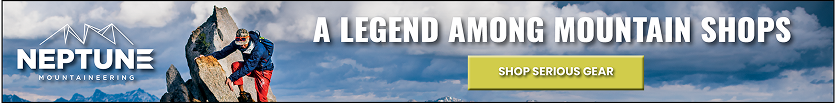
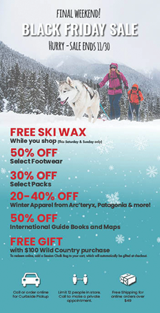
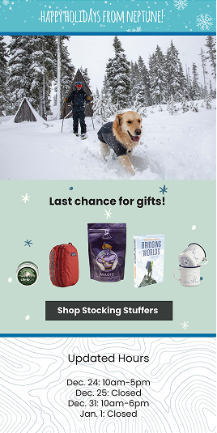
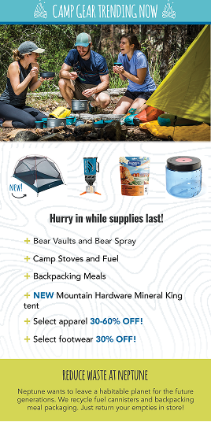
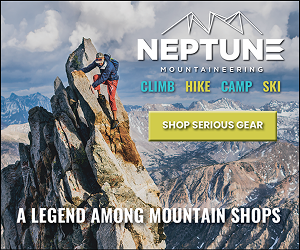
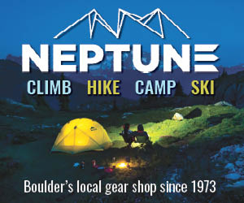

With foot traffic and event participation almost zero during the COVID-19 shutdowns, Neptune Mountaineering, a beloved local institution since 1977, had to find a way to get their business online. Not only that, but they had to compete with outdoor giants like REI and Backcountry who already had established online footprints.

Worked directly with executives, sales, operations, and developers to rebuild the site's product display pages and navigation at full catalog scale.
Designed buyers' guides and other landing pages to increase content authority and search ranking for specialized products which distinguished the brand.
Ran coordinated seasonal campaigns across every channel rather than treating them as separate efforts.
Ideated and produced sold-out events (once regulations allowed) that ran simultaneously in-person and online. Landed celebrity athlete keynote speakers.
A full 28-page catalog tying seasonal product, pricing, and brand voice together.






I'm currently taking on 1–2 retainer clients — small businesses that are great at what they do but don't have the time to run marketing themselves.
Let's chat